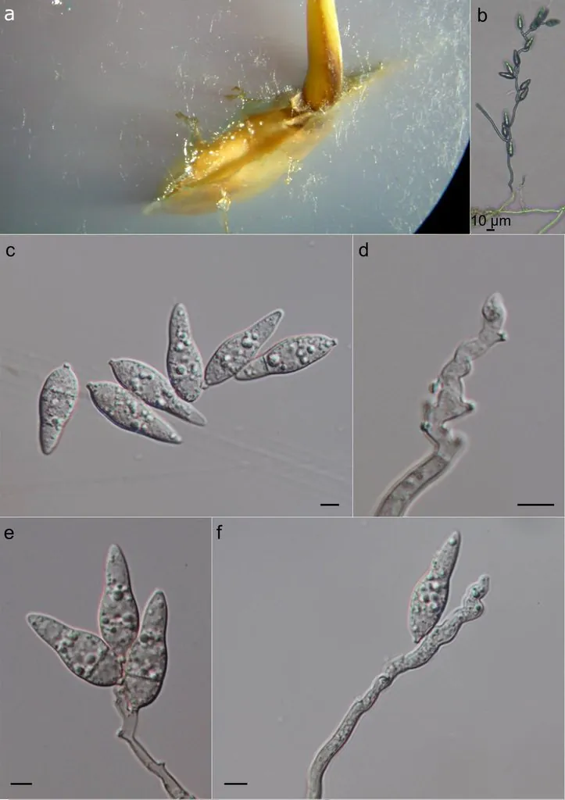

真菌 · 真菌界
稻瘟病菌 Magnaporthe oryzae

稻瘟病菌是引起水稻稻瘟病的病原菌，可侵染叶片、茎节和穗部，是水稻生产中最严重的真菌病害之一。
- 分类
- 门子囊菌门纲粪壳菌纲目巨座壳目科巨座壳科属巨座壳属
- 栖息环境
- 水稻的叶片、茎节与穗部，高温高湿多雨时易流行
- 地理分布
- 全球水稻产区广泛发生，中国各稻区均有
- 保护级别
- 暂无评估（植物病原真菌）
物种志
稻瘟病菌是子囊菌门巨座壳科的真菌，菌丝有隔膜，分生孢子梗单生或丛生，分生孢子梨形或倒棍棒形，通常有 2 个隔膜，呈淡褐色。它侵染水稻后，叶片上形成梭形病斑，中央灰白、边缘褐色；侵染茎节形成黑褐色病斑，侵染穗颈则形成穗颈瘟，导致白穗。
稻瘟病菌是水稻生产中最严重的病害之一，在全球各稻区都有发生，高温高湿、多雨和偏施氮肥时容易流行，严重时减产可达 30%–50%。病菌以菌丝和分生孢子在病稻草、病谷上越冬，来年随风雨传播。防治上主要采用抗病品种、合理施肥、浅水勤灌和药剂防治。稻瘟病菌是研究植物与真菌互作的重要模式病原菌，其基因组测序已完成，为病害研究提供了重要基础。
形态与习性
- 寄主水稻
- 病害稻瘟病，可侵染叶、节、穗
- 病斑梭形，中央灰白、边缘褐色
- 分生孢子梨形，多具 2 个隔膜
- 流行条件高温高湿、多雨、偏施氮肥
- 防控抗病品种、合理施肥、药剂防治
趣味知识
- 稻瘟病是水稻生产中最严重的病害之一，穗颈瘟会造成白穗。
- 叶片上的梭形病斑中央灰白、边缘褐色，是稻瘟病的典型症状。
- 稻瘟病菌是研究植物与真菌互作的重要模式病原菌。